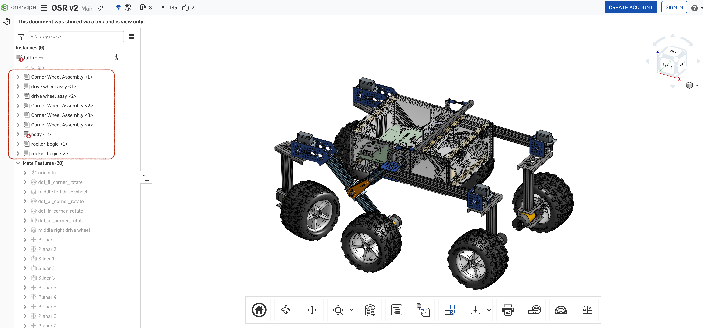

source("../../osr_common.R")5 Create Assembly Description
5.1 Initialize OML File
outputdir <- paste0(omlrepo,"src/oml/opencaesar.io/open-source-rover/description/assembly/")
outputfile <- paste0(outputdir, "assembly.oml")
init_oml_file <-
"description <http://opencaesar.io/open-source-rover/description/assembly/assembly#> as assembly {\n}\n"
cat(file=outputfile, init_oml_file)
outputfile <- paste0(outputdir, "parts.oml")
init_oml_file <-
"description <http://opencaesar.io/open-source-rover/description/assembly/parts#> as parts {\n}\n"
cat(file=outputfile, init_oml_file)
# init interface.oml since they use assembly.oml
outputfile <- paste0(outputdir, "interface.oml")
init_oml_file <-
"description <http://opencaesar.io/open-source-rover/description/assembly/interface#> as interface {\n}\n"
cat(file=outputfile, init_oml_file)5.2 Modeling Mechanical Assembly
“Assembly” descriptions are created from parts_list
5.2.1 Import from github
url <- "https://raw.githubusercontent.com/nasa-jpl/open-source-rover/master/parts_list/parts_list.csv"
df_csv <- read.csv(url)5.2.2 Tidy Data
colnames(df_csv) <- c("assembly","short name","part number","long name","link","cost","number req in assy","assembly multiplier")5.2.3 Explore Data
Parts
In parts list, we can observe duplicated parts as follows.
df_csv %>%
group_by(`part number`) %>%
filter(n()>1) %>%
arrange(`part number`)# A tibble: 4 × 8
# Groups: part number [2]
assembly `short name` `part number` `long name` link cost
<chr> <chr> <chr> <chr> <chr> <chr>
1 rocker bogie 3x5 grid plate 1116-0024-0040 1116 Series Grid Pla… http… $1.29
2 body 3x5 grid plate 1116-0024-0040 1116 Series Grid Pla… http… $1.29
3 drive wheel 2 Hole U channel 1120-0002-0072 1120 Series U-Channe… http… $4.99
4 body 2 Hole U channel 1120-0002-0072 1120 Series U-Channe… http… $4.99
# ℹ 2 more variables: `number req in assy` <dbl>, `assembly multiplier` <int>The part numbers are the same, but the part names and properties are slightly different.
Assembly
unique(df_csv$assembly)[1] "drive wheel" "corner" "rocker bogie" "body" "general" Data is grouped by “assembly”.
This means An "Assembly" has "Part"s.
So we will add structure:Part and structure:Assembly as a specialization of mission:Component to our oml model.
a structure:Subsystem has a structure:Assembly.
a structure:Assembly has a structure:Part.
The updated model is shown below.
vocabulary <http://opencaesar.io/open-source-rover/vocabulary/structure#> as ^structure {
extends <http://imce.jpl.nasa.gov/foundation/mission#> as mission
extends <http://imce.jpl.nasa.gov/foundation/base#> as base
concept System < mission:Component
concept Subsystem < mission:Component
relation hasSubsystem [
from System
to Subsystem
] < base:contains
concept Assembly < mission:Component
relation hasAssembly [
from Subsystem
to Assembly
] < base:contains
concept Part < mission:Component
relation hasPart [
from Assembly
to Part
] < base:contains
}Once we add new vocabulary, let’s check the consistency of our model using owlReason.
library(omlhashiR)
# oml_repository <- "../open-source-rover/"
oml_repository <- omlrepo
omlhashiR::oml_refresh()[1] "kill success for pid=23953"omlhashiR::oml_stop_Daemon(oml_repository)[1] "Stopping Daemon(s)" "1 Daemon stopped" omlhashiR::oml_build(oml_repository) [1] "Starting a Gradle Daemon, 27 stopped Daemons could not be reused, use --status for details"
[2] "> Task :omlZip"
[3] "> Task :assemble"
[4] "> Task :downloadDependencies UP-TO-DATE"
[5] "> Task :omlToOwl"
[6] "> Task :owlReason"
[7] "> Task :check"
[8] "> Task :build"
[9] ""
[10] "BUILD SUCCESSFUL in 7s"
[11] "4 actionable tasks: 3 executed, 1 up-to-date" omlhashiR::oml_owlReason(oml_repository)[1] "> Task :downloadDependencies UP-TO-DATE"
[2] "> Task :omlToOwl UP-TO-DATE"
[3] "> Task :owlReason UP-TO-DATE"
[4] ""
[5] "BUILD SUCCESSFUL in 608ms"
[6] "3 actionable tasks: 3 up-to-date" 5.2.4 Modeling assembly data
The descriptions of assemblies between parts_list and CAD model are different.

We chose assembly definitions from the CAD model.
Below assembly data is a description for structure:Assemblyin OML model.
df_instance_assembly <- data.frame(
name = c("Body Assembly",
"Drive Wheel Assembly-1",
"Drive Wheel Assembly-2",
"Corner Wheel Assembly-1",
"Corner Wheel Assembly-2",
"Corner Wheel Assembly-3",
"Corner Wheel Assembly-4",
"Rocker Bogie Suspension Assembly-1",
"Rocker Bogie Suspension Assembly-2",
"Mechanical Harness"),
instancename = c("body-assembly",
"drive-wheel-assembly-1",
"drive-wheel-assembly-2",
"corner-wheel-assembly-1",
"corner-wheel-assembly-2",
"corner-wheel-assembly-3",
"corner-wheel-assembly-4",
"rocker-bogie-suspension-assembly-1",
"rocker-bogie-suspension-assembly-2",
"mechanical-harness"
)
) %>%
mutate(type = "assembly") %>%
mutate(hasDescription = "")5.2.5 Add relationship to subsystem
We define the relationship between assemblies and subsystems as follows.
df_instance_assembly <- df_instance_assembly %>%
mutate(ownedSubsystem =c("subsystems:MechanicalSubsystem",
"subsystems:MobilitySubsystem",
"subsystems:MobilitySubsystem",
"subsystems:MobilitySubsystem",
"subsystems:MobilitySubsystem",
"subsystems:MobilitySubsystem",
"subsystems:MobilitySubsystem",
"subsystems:MechanicalSubsystem",
"subsystems:MechanicalSubsystem",
"subsystems:MechanicalSubsystem"
)
)5.2.6 Add descriptions to assembly
Rocker-Bogie Suspension
text <- "The Rocker-Bogie is the suspension system that enables the rover to climb aggressive obstacles. The design allows all 6 wheels to be in contact with the ground as much as possible, increasing traction. The suspension system on a typical consumer vehicle can traverse obstacles about half the height of one wheel; the Rocker-Bogie suspension system can traverse obstacles over 2 times the height of the wheel."
df_instance_assembly$hasDescription[df_instance_assembly$name=="Rocker Bogie Suspension Assembly-1"] <- text
df_instance_assembly$hasDescription[df_instance_assembly$name=="Rocker Bogie Suspension Assembly-2"] <- text5.2.7 Function to generate instance descriptions.
generateAssemblyDescriptions <- function(df){
df_in <- df
text <- paste0("// Assembly Instances\n")
text_instance <- ""
for (i in 1:nrow(df_in)){
id <- paste0("A", ".", formatC(i, width = 2, flag="0"))
type <- "structure:Assembly"
text_instance <- paste0(text_instance,
" instance ", df_in$instancename[i], " : ", type, " [","\n",
" base:hasIdentifier \"", id,"\"\n",
" base:hasCanonicalName \"",df_in$name[i],"\"\n",
" base:hasShortName \"",df_in$name[i],"\"\n",
" base:hasDescription \"",df_in$hasDescription[i],"\"\n",
" ]\n"
)
}
text <- paste0(text, text_instance)
return(text)
}5.2.8 Function to generate reference instance descriptions.
This function generates ref instance following below pattern.
ref instance subsystems:MechanicalSubsystem [
^structure:hasAssembly body-assembly
]generateSubsystemRefDescriptions <- function(df){
# df <- df_instance_assembly # for debug
subsystem <- as.list(unique(df$ownedSubsystem))
text <- paste0("//ref to Subsystem","\n")
text_ref <- ""
for(j in 1:length(subsystem)){
ref_instance <- subsystem[j]
df_instance <- df %>%
filter(df$ownedSubsystem == ref_instance)
text_ref <- paste0(text_ref,
" ref instance ", ref_instance, " [","\n"
)
for (i in 1:nrow(df_instance)){
text_ref <- paste0(text_ref,
" ^structure:hasAssembly ", df_instance$instancename[i],"\n"
)
}
text_ref <- paste0(text_ref,
" ]\n\n"
)
}
text <- paste0(text, text_ref)
return(text)
} 5.2.9 Output OML FILE
# outputdir <- "~/Workspaces/gitlab/OSR_local/open-source-rover/src/oml/opencaesar.io/open-source-rover/description/assembly/"
#outputdir <-"./open-source-rover/src/oml/opencaesar.io/open-source-rover/description/assembly/"
# outputdir <-"./"
outputfile <- paste0(outputdir, "assembly.oml")assemly.omlのフレーム作成
omldescriptions <-
"description <http://opencaesar.io/open-source-rover/description/assembly/assembly#> as assembly {
uses <http://imce.jpl.nasa.gov/foundation/base#> as base
uses <http://opencaesar.io/open-source-rover/vocabulary/structure#> as ^structure
extends <http://opencaesar.io/open-source-rover/description/structure/subsystems#> as subsystems
"5.2.10 Assembly Instances : OK
instance <- generateAssemblyDescriptions(df_instance_assembly)
# cat(instance)
omldescriptions <- paste0(omldescriptions, instance,"\n")6 relation to Subsystem
ref_instance <- generateSubsystemRefDescriptions(df_instance_assembly)
cat(ref_instance)//ref to Subsystem
ref instance subsystems:MechanicalSubsystem [
^structure:hasAssembly body-assembly
^structure:hasAssembly rocker-bogie-suspension-assembly-1
^structure:hasAssembly rocker-bogie-suspension-assembly-2
^structure:hasAssembly mechanical-harness
]
ref instance subsystems:MobilitySubsystem [
^structure:hasAssembly drive-wheel-assembly-1
^structure:hasAssembly drive-wheel-assembly-2
^structure:hasAssembly corner-wheel-assembly-1
^structure:hasAssembly corner-wheel-assembly-2
^structure:hasAssembly corner-wheel-assembly-3
^structure:hasAssembly corner-wheel-assembly-4
]omldescriptions <- paste0(omldescriptions, ref_instance,"\n")6.1 Generate OML File
omldescriptions <- paste0(omldescriptions,"\n}\n")
cat(file=outputfile, omldescriptions)6.2 Validate Model
Before we check the model, add below codes to the description bundle.
includes <http://opencaesar.io/open-source-rover/description/assembly/assembly#>omlhashiR::oml_build(oml_repository) [1] "> Task :omlZip"
[2] "> Task :assemble"
[3] "> Task :downloadDependencies UP-TO-DATE"
[4] "> Task :omlToOwl"
[5] "> Task :owlReason"
[6] "> Task :check"
[7] "> Task :build"
[8] ""
[9] "BUILD SUCCESSFUL in 2s"
[10] "4 actionable tasks: 3 executed, 1 up-to-date"oml_startFuseki(oml_repository)[1] ""
[2] "> Task :startFuseki"
[3] "Fuseki server has now successfully started with pid=24944, listening on http://localhost:3030"
[4] ""
[5] "BUILD SUCCESSFUL in 3s"
[6] "1 actionable task: 1 executed" omlhashiR::oml_owlLoad(oml_repository)[1] "> Task :downloadDependencies UP-TO-DATE"
[2] "> Task :omlToOwl UP-TO-DATE"
[3] "> Task :owlReason UP-TO-DATE"
[4] ""
[5] "> Task :owlLoad"
[6] "Loaded 22 owl file(s), unloaded 0 owl file(s)"
[7] ""
[8] "BUILD SUCCESSFUL in 1s"
[9] "4 actionable tasks: 1 executed, 3 up-to-date" 6.3 Query
library(tansakusuR)
endpoint_url <- "http://localhost:3030/open-source-rover/sparql"6.3.1 Extract mission:Component Hierarchy
query_string <-'
PREFIX base: <http://imce.jpl.nasa.gov/foundation/base#>
PREFIX mission: <http://imce.jpl.nasa.gov/foundation/mission#>
PREFIX structure: <http://opencaesar.io/open-source-rover/vocabulary/structure#>
PREFIX rdfs: <http://www.w3.org/2000/01/rdf-schema#>
SELECT DISTINCT ?c1_localname ?c1_name ?c1_type ?c2_localname ?c2_name
WHERE {
?c1 a mission:Component ;
base:hasCanonicalName ?c1_name .
OPTIONAL{
?c1 base:isContainedIn ?c2 .
OPTIONAL{
?c2 base:hasCanonicalName ?c2_name .
}
}
# Extract the local name
BIND(STRAFTER(STR(?c1), "#") AS ?c1_localname) .
BIND(STRAFTER(STR(?c2), "#") AS ?c2_localname) .
OPTIONAL {
?c1 a structure:System ;
BIND("structure:System" AS ?c1_type) .
}
OPTIONAL {
?c1 a structure:Subsystem ;
BIND("structure:Subsystem" AS ?c1_type) .
}
OPTIONAL {
?c1 a structure:Assembly ;
BIND("structure:Assembly" AS ?c1_type) .
}
}
ORDER BY ?c1_localname
'
df_query <- tansakusuR::send_query(endpoint_url,query_string)
datatable(df_query, options = list(pageLength = -1))df_query <- df_query %>%
filter(df_query$c1_type != "structure:Part") %>%
arrange(desc(c2_name))
plotCollapsibleTreeFromDataframe(df_query, palette="BluYl", parent="c2_name", child="c1_name",type="c1_type")6.3.2 Some visualization experiments
networkD3::simpleNetwork
df2<- df_query %>%
mutate(owner=c2_name) %>%
mutate(name=c1_name) %>%
select("owner","name") %>%
arrange(desc(owner)) %>%
slice(-n())
library(networkD3)
networkD3::simpleNetwork(df2)networkD3::diagonalNetwor
library(data.tree)
nd3 <- ToListExplicit(FromDataFrameNetwork(df2), unname = T)
networkD3::diagonalNetwork(List = nd3, fontSize = 10, opacity = 0.9)networkD3::radialNetwork
networkD3::radialNetwork(nd3, nodeColour="seagreen")